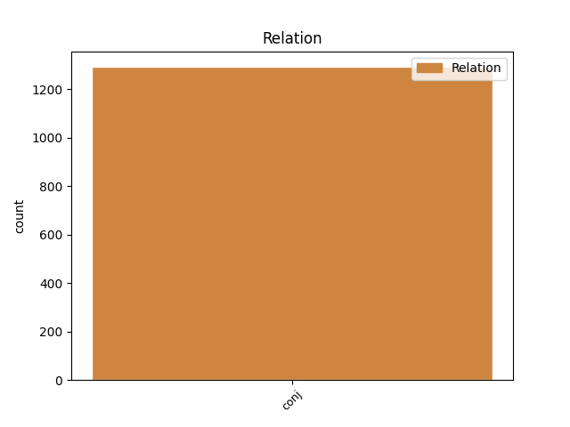
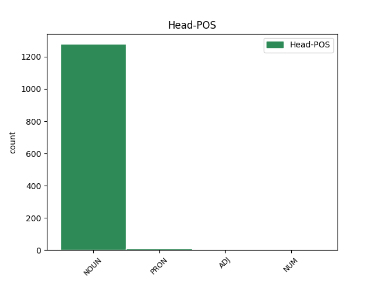
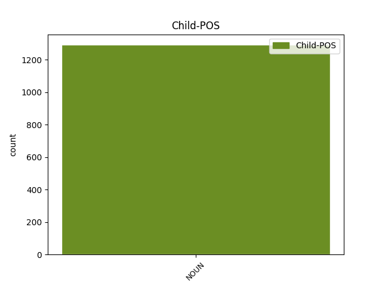

Distribution of features within this leaf



Agreement Rules sorted by frequency.
- When the dependent token is the conjunct(conj) of the head token, and the dependent token is NOUN.
1 Även _ _ _ _ 0 _ _ _
2 den _ _ _ _ 0 _ _ _
3 förälder _ _ _ _ 0 _ _ _
4 som _ _ _ _ 0 _ _ _
5 väljer _ _ _ _ 0 _ _ _
6 att _ _ _ _ 0 _ _ _
7 stanna _ _ _ _ 0 _ _ _
8 hemma _ _ _ _ 0 _ _ _
9 under _ _ _ _ 0 _ _ _
10 barnens _ _ _ _ 0 _ _ _
11 första _ _ _ _ 0 _ _ _
12 år _ _ _ _ 0 _ _ _
13 har _ _ _ _ 0 _ _ _
14 ett _ _ _ _ 0 _ _ _
15 legitimt _ _ _ _ 0 _ _ _
16 behov _ _ _ _ 0 _ _ _
17 av _ _ _ _ 0 _ _ _
18 att _ _ _ _ 0 _ _ _
19 då _ _ _ _ 0 _ _ _
20 och _ _ _ _ 0 _ _ _
21 då _ _ _ _ 0 _ _ _
22 få _ _ _ _ 0 _ _ _
23 avkoppling _ _ _ _ 0 _ _ _
24 från _ _ _ _ 0 _ _ _
25 barnen _ _ _ _ 0 _ _ _
26 och _ _ _ _ 0 _ _ _
27 borde _ _ _ _ 0 _ _ _
28 inte _ _ _ _ 0 _ _ _
29 behöva _ _ _ _ 0 _ _ _
30 släpa _ _ _ _ 0 _ _ _
31 med _ _ _ _ 0 _ _ _
32 sig _ _ _ _ 0 _ _ _
33 barnen _ _ _ _ 0 _ _ _
34 till _ _ _ _ 0 _ _ _
35 tandläkare tandläkare NOUN NN|UTR|SIN|IND|NOM Case=Nom|Definite=Ind|Gender=Com|Number=Sing 0 _ _ _
36 , _ _ _ _ 0 _ _ _
37 hårfrisörska hårfrisörska NOUN NN|UTR|SIN|IND|NOM Case=Nom|Definite=Ind|Gender=Com|Number=Sing 35 conj _ _
38 etc _ _ _ _ 0 _ _ _
39 . _ _ _ _ 0 _ _ _
Disagree Examples:
1 Dessa _ _ _ _ 0 _ _ _
2 inkomster _ _ _ _ 0 _ _ _
3 är _ _ _ _ 0 _ _ _
4 * _ _ _ _ 0 _ _ _
5 inkomst _ _ _ _ 0 _ _ _
6 av _ _ _ _ 0 _ _ _
7 tjänst _ _ _ _ 0 _ _ _
8 - _ _ _ _ 0 _ _ _
9 lön _ _ _ _ 0 _ _ _
10 , _ _ _ _ 0 _ _ _
11 pension _ _ _ _ 0 _ _ _
12 , _ _ _ _ 0 _ _ _
13 livränta livränta NOUN NN|UTR|SIN|IND|NOM Case=Nom|Definite=Ind|Gender=Com|Number=Sing 0 _ _ _
14 , _ _ _ _ 0 _ _ _
15 undantagsförmåner undantagsförmån NOUN NN|UTR|PLU|IND|NOM Case=Nom|Definite=Ind|Gender=Com|Number=Plur 13 conj _ _
16 och _ _ _ _ 0 _ _ _
17 övrig _ _ _ _ 0 _ _ _
18 tjänsteinkomst _ _ _ _ 0 _ _ _
19 . _ _ _ _ 0 _ _ _
20 ( _ _ _ _ 0 _ _ _
21 Undantag _ _ _ _ 0 _ _ _
22 : _ _ _ _ 0 _ _ _
23 periodiskt _ _ _ _ 0 _ _ _
24 understöd _ _ _ _ 0 _ _ _
25 eller _ _ _ _ 0 _ _ _
26 därmed _ _ _ _ 0 _ _ _
27 jämförlig _ _ _ _ 0 _ _ _
28 periodisk _ _ _ _ 0 _ _ _
29 inkomst _ _ _ _ 0 _ _ _
30 . _ _ _ _ 0 _ _ _
31 ) _ _ _ _ 0 _ _ _
32 * _ _ _ _ 0 _ _ _
33 inkomst _ _ _ _ 0 _ _ _
34 av _ _ _ _ 0 _ _ _
35 jordbruksfastighet _ _ _ _ 0 _ _ _
36 - _ _ _ _ 0 _ _ _
37 om _ _ _ _ 0 _ _ _
38 den _ _ _ _ 0 _ _ _
39 skattskyldige _ _ _ _ 0 _ _ _
40 arbetat _ _ _ _ 0 _ _ _
41 i _ _ _ _ 0 _ _ _
42 jordbruket _ _ _ _ 0 _ _ _
43 i _ _ _ _ 0 _ _ _
44 ej _ _ _ _ 0 _ _ _
45 blott _ _ _ _ 0 _ _ _
46 ringa _ _ _ _ 0 _ _ _
47 omfattning _ _ _ _ 0 _ _ _
48 . _ _ _ _ 0 _ _ _
49 * _ _ _ _ 0 _ _ _
50 inkomst _ _ _ _ 0 _ _ _
51 av _ _ _ _ 0 _ _ _
52 rörelse _ _ _ _ 0 _ _ _
53 - _ _ _ _ 0 _ _ _
54 om _ _ _ _ 0 _ _ _
55 den _ _ _ _ 0 _ _ _
56 skattskyldige _ _ _ _ 0 _ _ _
57 arbetat _ _ _ _ 0 _ _ _
58 i _ _ _ _ 0 _ _ _
59 rörelsen _ _ _ _ 0 _ _ _
60 i _ _ _ _ 0 _ _ _
61 ej _ _ _ _ 0 _ _ _
62 blott _ _ _ _ 0 _ _ _
63 ringa _ _ _ _ 0 _ _ _
64 omfattning _ _ _ _ 0 _ _ _
65 . _ _ _ _ 0 _ _ _
1 Dessa _ _ _ _ 0 _ _ _
2 inkomster _ _ _ _ 0 _ _ _
3 är _ _ _ _ 0 _ _ _
4 * _ _ _ _ 0 _ _ _
5 inkomst _ _ _ _ 0 _ _ _
6 av _ _ _ _ 0 _ _ _
7 tjänst _ _ _ _ 0 _ _ _
8 - _ _ _ _ 0 _ _ _
9 lön _ _ _ _ 0 _ _ _
10 , _ _ _ _ 0 _ _ _
11 pension _ _ _ _ 0 _ _ _
12 , _ _ _ _ 0 _ _ _
13 livränta _ _ _ _ 0 _ _ _
14 , _ _ _ _ 0 _ _ _
15 undantagsförmåner undantagsförmån NOUN NN|UTR|PLU|IND|NOM Case=Nom|Definite=Ind|Gender=Com|Number=Plur 0 _ _ _
16 och _ _ _ _ 0 _ _ _
17 övrig _ _ _ _ 0 _ _ _
18 tjänsteinkomst tjänsteinkomst NOUN NN|UTR|SIN|IND|NOM Case=Nom|Definite=Ind|Gender=Com|Number=Sing 15 conj _ SpaceAfter=No
19 . _ _ _ _ 0 _ _ _
20 ( _ _ _ _ 0 _ _ _
21 Undantag _ _ _ _ 0 _ _ _
22 : _ _ _ _ 0 _ _ _
23 periodiskt _ _ _ _ 0 _ _ _
24 understöd _ _ _ _ 0 _ _ _
25 eller _ _ _ _ 0 _ _ _
26 därmed _ _ _ _ 0 _ _ _
27 jämförlig _ _ _ _ 0 _ _ _
28 periodisk _ _ _ _ 0 _ _ _
29 inkomst _ _ _ _ 0 _ _ _
30 . _ _ _ _ 0 _ _ _
31 ) _ _ _ _ 0 _ _ _
32 * _ _ _ _ 0 _ _ _
33 inkomst _ _ _ _ 0 _ _ _
34 av _ _ _ _ 0 _ _ _
35 jordbruksfastighet _ _ _ _ 0 _ _ _
36 - _ _ _ _ 0 _ _ _
37 om _ _ _ _ 0 _ _ _
38 den _ _ _ _ 0 _ _ _
39 skattskyldige _ _ _ _ 0 _ _ _
40 arbetat _ _ _ _ 0 _ _ _
41 i _ _ _ _ 0 _ _ _
42 jordbruket _ _ _ _ 0 _ _ _
43 i _ _ _ _ 0 _ _ _
44 ej _ _ _ _ 0 _ _ _
45 blott _ _ _ _ 0 _ _ _
46 ringa _ _ _ _ 0 _ _ _
47 omfattning _ _ _ _ 0 _ _ _
48 . _ _ _ _ 0 _ _ _
49 * _ _ _ _ 0 _ _ _
50 inkomst _ _ _ _ 0 _ _ _
51 av _ _ _ _ 0 _ _ _
52 rörelse _ _ _ _ 0 _ _ _
53 - _ _ _ _ 0 _ _ _
54 om _ _ _ _ 0 _ _ _
55 den _ _ _ _ 0 _ _ _
56 skattskyldige _ _ _ _ 0 _ _ _
57 arbetat _ _ _ _ 0 _ _ _
58 i _ _ _ _ 0 _ _ _
59 rörelsen _ _ _ _ 0 _ _ _
60 i _ _ _ _ 0 _ _ _
61 ej _ _ _ _ 0 _ _ _
62 blott _ _ _ _ 0 _ _ _
63 ringa _ _ _ _ 0 _ _ _
64 omfattning _ _ _ _ 0 _ _ _
65 . _ _ _ _ 0 _ _ _
1 En _ _ _ _ 0 _ _ _
2 sekunds _ _ _ _ 0 _ _ _
3 tvekan _ _ _ _ 0 _ _ _
4 eller _ _ _ _ 0 _ _ _
5 dröjsmål _ _ _ _ 0 _ _ _
6 eller _ _ _ _ 0 _ _ _
7 ett _ _ _ _ 0 _ _ _
8 till _ _ _ _ 0 _ _ _
9 synes _ _ _ _ 0 _ _ _
10 oskyldigt _ _ _ _ 0 _ _ _
11 slarv _ _ _ _ 0 _ _ _
12 kan _ _ _ _ 0 _ _ _
13 kosta _ _ _ _ 0 _ _ _
14 dig du PRON PN|UTR|SIN|DEF|OBJ Case=Acc|Definite=Def|Gender=Com|Number=Sing|PronType=Prs 0 _ _ _
15 och _ _ _ _ 0 _ _ _
16 även _ _ _ _ 0 _ _ _
17 kamraterna kamrat NOUN NN|UTR|PLU|DEF|NOM Case=Nom|Definite=Def|Gender=Com|Number=Plur 14 conj _ _
18 livet _ _ _ _ 0 _ _ _
19 . _ _ _ _ 0 _ _ _
1 Idrottsmateriel _ _ _ _ 0 _ _ _
2 , _ _ _ _ 0 _ _ _
3 t ex _ _ _ _ 0 _ _ _
4 spikskor spiksko NOUN NN|UTR|PLU|IND|NOM Case=Nom|Definite=Ind|Gender=Com|Number=Plur 0 _ _ _
5 , _ _ _ _ 0 _ _ _
6 kompass kompass NOUN NN|UTR|SIN|IND|NOM Case=Nom|Definite=Ind|Gender=Com|Number=Sing 4 conj _ SpaceAfter=No
7 , _ _ _ _ 0 _ _ _
8 kartfodral _ _ _ _ 0 _ _ _
1 Dessförinnan _ _ _ _ 0 _ _ _
2 skall _ _ _ _ 0 _ _ _
3 du _ _ _ _ 0 _ _ _
4 ha _ _ _ _ 0 _ _ _
5 hunnit _ _ _ _ 0 _ _ _
6 med _ _ _ _ 0 _ _ _
7 tvättning _ _ _ _ 0 _ _ _
8 och _ _ _ _ 0 _ _ _
9 rakning _ _ _ _ 0 _ _ _
10 , _ _ _ _ 0 _ _ _
11 frukost _ _ _ _ 0 _ _ _
12 i _ _ _ _ 0 _ _ _
13 matsalen _ _ _ _ 0 _ _ _
14 , _ _ _ _ 0 _ _ _
15 sängbäddning _ _ _ _ 0 _ _ _
16 och _ _ _ _ 0 _ _ _
17 kontroll _ _ _ _ 0 _ _ _
18 av _ _ _ _ 0 _ _ _
19 uniform uniform NOUN NN|UTR|SIN|IND|NOM Case=Nom|Definite=Ind|Gender=Com|Number=Sing 0 _ _ _
20 , _ _ _ _ 0 _ _ _
21 skor sko NOUN NN|UTR|PLU|IND|NOM Case=Nom|Definite=Ind|Gender=Com|Number=Plur 19 conj _ SpaceAfter=No
22 , _ _ _ _ 0 _ _ _
23 vapen _ _ _ _ 0 _ _ _
24 m m _ _ _ _ 0 _ _ _
25 , _ _ _ _ 0 _ _ _
26 så _ _ _ _ 0 _ _ _
27 att _ _ _ _ 0 _ _ _
28 allt _ _ _ _ 0 _ _ _
29 är _ _ _ _ 0 _ _ _
30 ' _ _ _ _ 0 _ _ _
31 tiptop _ _ _ _ 0 _ _ _
32 ' _ _ _ _ 0 _ _ _
33 vid _ _ _ _ 0 _ _ _
34 uppställningen _ _ _ _ 0 _ _ _
35 . _ _ _ _ 0 _ _ _